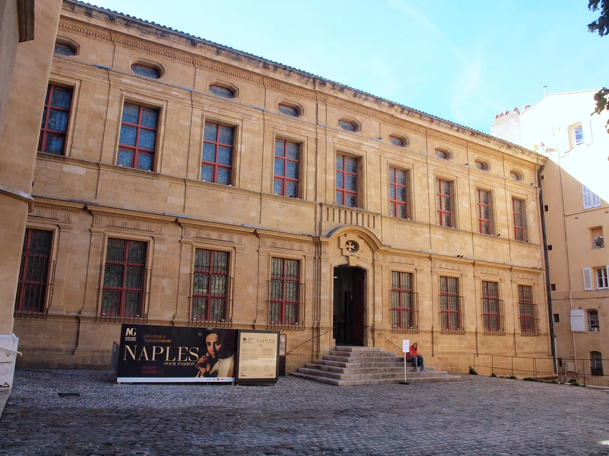

Musée Granet

| 지역 | Aix |
|---|---|
| 등급 | Recommended |
| 언제 | Day 13 · 9/10시간표 기준 |
| 상세 | 챕터 본문에서 보기 |
| 지도 | Aix 실행지도 · 핀 이름 Musée Granet |
참고
오프라인입니다. 위키백과와 지도 링크는 연결되면 다시 동작합니다.
세잔만 기대하면 안 되는 미술관이다. 소장 구성, 세잔 작품 수, 플랑크 컬렉션, 2026년 기획전은 조사 필요 상태다.
출발 전 반드시 확인할 것 — 2026년은 세잔 사후 120주년이라 이 미술관에 특별 프로그램이 있을 가능성이 높다. 아래 예약카드가 이 항목이다.
미술관 자체는 옛 몰타 기사단 수도원 건물이고, 이름은 이 도시 출신 화가 프랑수아 마리위스 그라네에서 왔다. 세잔의 고향 미술관인데 정작 세잔 유화는 소수라는 것이 오래된 아이러니다 — 대신 20세기 컬렉션(플랑크 기증)과 자코메티·피카소 계열이 이 미술관의 실제 무게중심이다. 2026년 여름–가을 특별전 요금(€14)이 상설 요금(€7)의 두 배라는 점은 확인됐다 (F028). 관람은 특별전 하나 + 상설 한 바퀴로 90분이면 충분하다. 마자랭 지구 산책과 같은 오후에 묶이는 위치라 동선 낭비가 없다. 수도원 회랑이던 안뜰 공간이 남아 있어 건물 자체가 소장품 이전의 볼거리다.
| 항목 | 값 |
|---|---|
| 요금·운영·휴관일 | 재확인 필수 |
| 체류 | 90분 |
| 성격 | 실내. 폭염·우천 대체안으로 가치 높음 |
- 2026년 11월 1일까지 화–일 10:00–18:00, 월요일 휴관 (출처: museegranet-aixenprovence.fr · 2026-08-14 확인)
- 티켓마감 17:30
- 2026 하계 일반권 €14 — 특별전 기간(7/4–11/1) 요율이다 (2026-08-14 확인)
- 특별전 Paul McCartney 사진전 포함
- 오디오가이드 일본어 포함 여러 언어, 대여 €4 공식 확인
Granet은 Cézanne 작품 수가 대규모인 미술관은 아니다. 대신 프로방스 미술과 19세기 회화, 현대 기증 컬렉션을 통해 세잔이 등장한 지역적 문맥을 읽는 장소다.